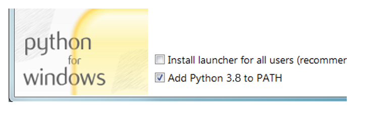
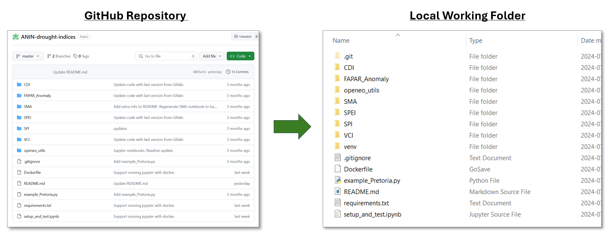

Installation
Requirements
To run the Drought Indices tools, a recent version of Python needs to be installed on your system—first, visit Python.org to confirm the latest version number.
You can check the version of Python you have installed by pressing Win + R, type cmd, and press Enter to open Command Prompt then running the command below.
Installing Python
Install Python by downloading an installer appropriate to your system from python.org and running it.
Be sure to check the box to have Python added to your PATH.

Installing Git on Windows
- Navigate to the latest Git for Windows installer and download the latest version.
- Follow the instructions as provided in the Git Setup wizard screen until the installation is complete. When prompted, select use standard Git Windows Command Prompt.
- Verify that Git was properly installed by running the following in
Command Prompt.
Other Operating Systems
If you are running other operating systems such as macOS, Linux, Ubuntu, etc, please follow the installation steps:
For Python visit: Download Python for Other Platforms
For Git visit: Install Git for Other Platforms
Clone the ANIN drought indices repository
Open a Command Prompt or a terminal and change the directory to the folder where you will be working. As an example, if you are working from a drive labelled *K* in the folder located at this directory address K:\DroughtIndices, the following prompt will change the directory.
Now that you are in your working folder, you can clone the ANIN drought indices repository using the following prompt:
All the files in the ANIN Drought Indices repository will be cloned to your local machine in your specified working folder. You can easily verify that in Windows Explorer.
In Command Prompt, change the directory again to point to the newly created ANIN-drought-indices folder on your PC using the following prompt:
Create a Virtual Environment with Python
Users with software dependent on older Python versions, like ArcGIS, may encounter issues in Command Prompt. To avoid conflicts when running ANIN tools, create a virtual environment in your working folder by executing the following commands:
Tip
If you encounter an error when creating the virtual environment, Command Prompt might be calling an older version of Python. To fix this, modify the command to point to the latest version by replacing python with the full path to the python.exe file from your recent installation. It should look like this:
Once the virtual environment is created, we can activate it.
Note
You will need to activate the virtual environment each time you restart a session in Command Prompt. When the virtual environment is activated, you will see (venv) in front of the directory.
Install pip and other requirements
We can now install pip and the other requirements to run the ANIN drought indices tools.
Now that all the installations are complete, we can start running the different drought indices tools.